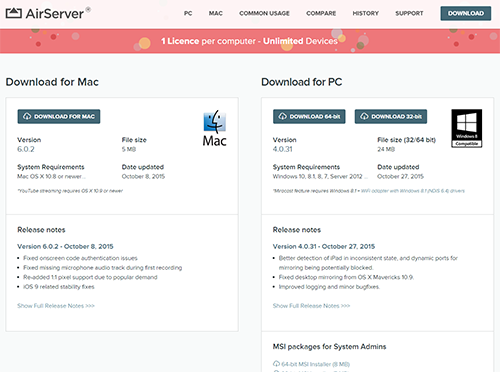
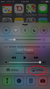
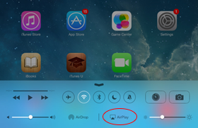
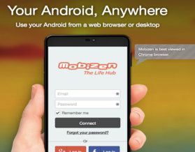

In order to conduct this online test you will need to install and run an application that will project the screen of your iOS onto your computer: Airserver.
If your computer is a Mac, please follow this link.
If your computer is running Windows
, please follow this link.
This will open a webpage where you can download the Airserver application using the icon “Download now”. You will be asked for an activation code, insert the one provided on the Airserver page.

2
Once installed, start the Airserver app in your computer. This will enable the Airplay functionality on you iOS
3
Now locate the Airplay icon on your IOS by swiping the screen from the bottom of the phone below the screen upwards (iOS7) or double click on the home button and swipe left to right (iOS 6 and below) and the Airplay icon will show:


Clicking on the Airplay icon and turning “Mirroring On” or “duplicate” and selecting your Desktop name will stream an image of your mobile screen onto your computer.
Keep the mobile screen image on top of all your windows and applications during the test.
Once the app is installed, you will need to register (Facebook, Google+, or email), please choose whichever option you prefer.
The installation process may prompt you to activate USB Debugging.
Skip the advertisement if any and go directly to the page where you will see the username you registered with and a “2-step verification” link. Now you need to set up Mobizen on your computer.
2
In your computer go to www.mobizen.com and download and install the app
After you have downloaded and installed the application in your computer go to the Mobizen site in your computer browser:

Enter your Mobizen username and password and press connect. You will then get a 2 step verification code.
3
Return to your mobile device and click on “2-Step Verification”, enter the verification code and press connect.
A few seconds later you will see your mobile screen projected onto your computer screen.
Keep this mobile screen image on top of all your windows and applications during the test .